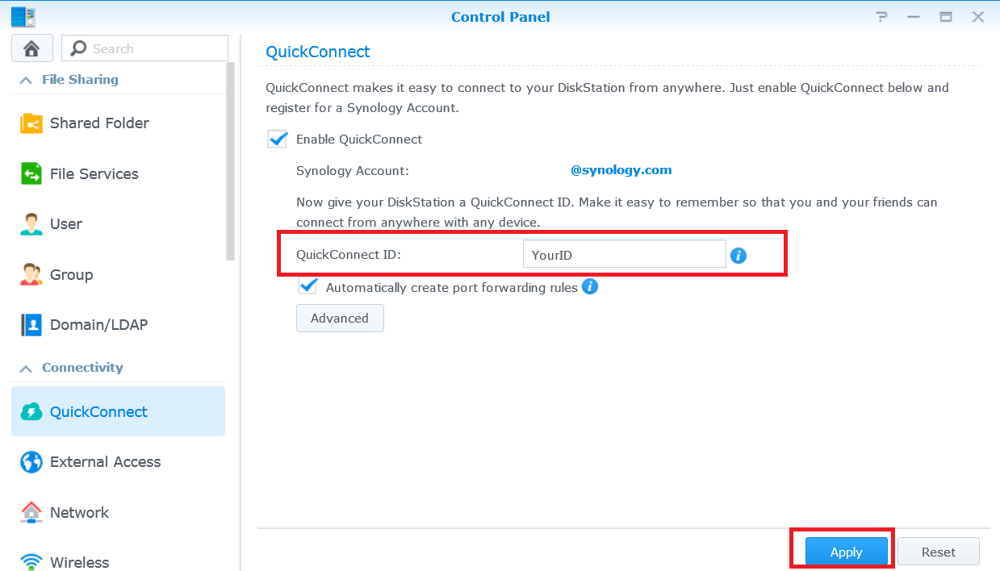

通过 Internet 访问 Synology NAS 和共享文件

总览
通过 QuickConnect，您可通过 Internet 轻松连接到 Synology NAS，而无需设置端口转发规则或其它复杂的网络设置。QuickConnect 可让您通过一个简单的可自定义地址（如 quickconnect.to/example）进行连接。
1. 设置 QuickConnect
- 请进入控制面板 > QuickConnect。
- 勾选启用 QuickConnect 复选框。

- 如果您没有 Synology 帐户，请单击立即注册。输入所需信息并单击确定。如果您已拥有 Synology 帐户，请输入帐户信息。

- 在 QuickConnect ID 栏中创建您自己的 QuickConnect ID。然后单击应用。

- 将出现 QuickConnect 链接信息。请使用这些链接访问 Synology NAS。在此实例中，DSM 的地址为 http://quickconnect.to/examplequickconnect。

- 如果您未看到 QuickConnect DSM 链接，请单击高级并确认已启用 DSM。

- 您现在就可使用 QuickConnect DSM 链接来访问您的 Synology NAS！

2. 使用 QuickConnect 共享 NAS 上的文件
启用 QuickConnect 后，您就可以轻松向任何人共享 Synology NAS 中存储的文件而无需担心任何的端口转送。
- 请先启用 HTTPS 连接以安全共享文件。请进入控制面板 > 网络。
- 勾选启用 HTTPS 连接复选框，然后单击应用。

- 然后为 QuickConnect 启用文件共享。进入控制面板 > QuickConnect。
- 单击高级并确认文件共享复选框已勾选。

注：
在配置高级 QuickConnect 设置时，我们建议您使用本地 IP 地址或 Synology NAS 的域名登录 DSM。
- 您现在就可以开始使用 QuickConnect 共享文件了。打开 File Station 并右键单击要共享的文件或文件夹。然后从上下文菜单中单击共享文件链接。

- 一个文件共享链接就创建好了。只需将该链接与家人和好友共享应就可下载共享文件夹/文件。